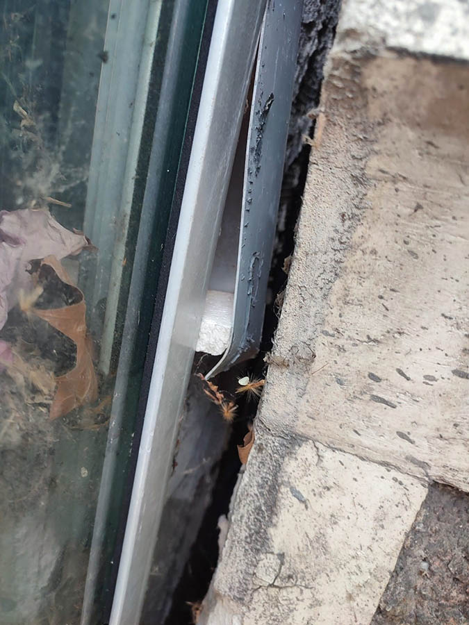
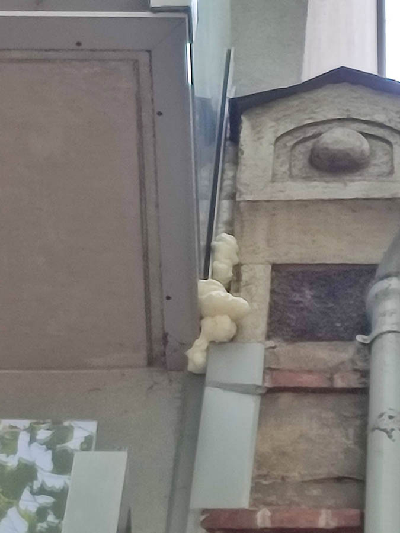
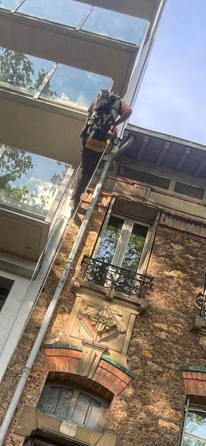
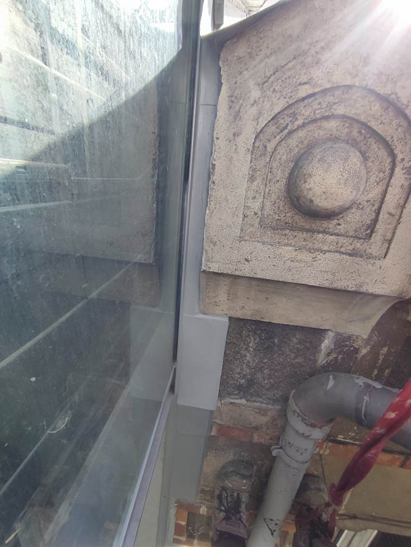

Entre un immeuble récent et son voisin en briques, un espace court sur toute la hauteur de la façade : le joint de dilatation. Quand il n’est plus étanche, la pluie a un chemin tout trouvé. Comment l’eau s’infiltre par une façade, qui décide des travaux en copropriété, puis un de nos chantiers en photos, du joint ouvert au joint refermé.
En bref
- En copropriété, une infiltration par la façade relève en principe du syndic : la façade est réputée partie commune, et les travaux se votent en assemblée générale, sauf urgence.
- Une façade laisse entrer l’eau par ses points faibles : fissures, joints, appuis de fenêtres, jonctions entre matériaux, et le joint de dilatation, que l’AQC dit « par nature difficile à étancher ».
- Sur ce chantier de 2023, le joint entre deux immeubles, ouvert, encombré de feuilles et bouché par endroits à la mousse expansive, a été repris sur cordes puis refermé.
Comment l’eau s’infiltre par une façade
Une façade assemble des murs, des fenêtres, des appuis, des joints, parfois des revêtements. L’eau de pluie entre par les points faibles. Les fiches de l’Agence Qualité Construction (AQC) en décrivent plusieurs :
- les murs en briques apparentes, surtout les plus anciens : la brique est un peu poreuse, et ces murs sont sensibles à la durée d’exposition à la pluie
- les appuis de fenêtres : ceux en briques sont, pour l’AQC, « le siège privilégié d’infiltrations »
- les joints de mortier, qui doivent rester pleins et serrés
- le haut des murs laissé sans protection, et l’eau qui arrive d’une terrasse ou de ses descentes
- les joints de dilatation mal traités, cités par l’AQC parmi les causes de décollement des revêtements de façade
Les gouttières et les descentes comptent aussi. Pour les immeubles d’habitation, le Code de la santé publique demande de vérifier l’étanchéité des gouttières et des chéneaux (article R1331-44). À Paris, le règlement sanitaire ajoute que gouttières, chéneaux et descentes doivent rester en bon état de fonctionnement et être nettoyés autant que nécessaire, « notamment après la chute des feuilles » (article 29-1).
L’eau ne ressort pas toujours en face de son entrée. Dans un de ses exemples, l’AQC décrit une eau infiltrée depuis une terrasse qui s’est ensuite diffusée dans le mur. D’où l’intérêt de chercher l’entrée avant de réparer. Selon la situation et le besoin, nous faisons des essais à l’eau, avec ou sans colorant, et nous suivons l’humidité du mur à l’humidimètre et à la caméra thermique.
Une infiltration peut aussi avoir deux entrées. En janvier 2026, sur une de nos recherches de fuite, l’eau passait par le cadre de deux fenêtres, et le joint de dilatation voisin était lui aussi en mauvais état. Notre rapport conseillait de traiter les deux.
Recherche de fuite : trouver par où l’eau entre
Infiltration par un toit ou une terrasse : notre recherche de fuite
Le test au colorant, en photos sur une verrière

Le joint de dilatation entre deux immeubles
L’AQC définit le joint de dilatation comme une ouverture rectiligne, aménagée dans un ouvrage pour absorber les différences de mouvement ou de comportement. Elle ajoute qu’il est « par nature difficile à étancher ».
Entre deux immeubles construits à des époques différentes, avec des matériaux différents, ce joint sépare deux ouvrages qui ne se comportent pas de la même façon. Il doit rester étanche sans gêner ces mouvements.
Le chantier : un joint de dilatation repris sur cordes
En 2023, dans les Hauts-de-Seine, le syndic de l’un des deux immeubles nous a confié la reprise de l’étanchéité de ce joint, pour empêcher l’eau d’entrer. D’un côté, un immeuble récent aux garde-corps vitrés. De l’autre, un immeuble ancien en briques, avec des ornements en pierre.
Avant les travaux, le joint était ouvert entre les deux façades et encombré de feuilles. Par endroits, l’espace avait été bouché à la mousse expansive.


Pour atteindre le joint sur toute sa hauteur, l’intervention s’est faite sur cordes.

Le joint a été refermé et rendu étanche, la maçonnerie abîmée reprise, puis les habillages qui le couvrent remis en place. Les travaux se sont terminés en juillet 2023. Le devis portait sur cette jonction, pas sur un ravalement des façades.

Façade et ravalement : qui décide en copropriété
Quand les titres de la copropriété ne disent rien ou se contredisent, le gros œuvre des bâtiments est réputé partie commune (loi du 10 juillet 1965, article 3). La façade relève donc en principe du syndicat des copropriétaires, et c’est le syndic qui commande les travaux.
Hors urgence, ces travaux se décident en assemblée générale. La loi range parmi ceux votés à la majorité de l’article 24 les travaux nécessaires à la conservation de l’immeuble, dont ceux qui portent sur le clos et le couvert. En cas d’urgence, le syndic peut faire réaliser, de sa propre initiative, les travaux nécessaires à la sauvegarde de l’immeuble (article 18).
Le ravalement suit ses propres règles. Dans certaines communes, dont Paris, un arrêté préfectoral impose un ravalement au moins une fois tous les dix ans, sur injonction du maire. Entre deux ravalements, les façades doivent rester en bon état de propreté, ce qui peut demander des interventions intermédiaires. Service Public cite les réparations ponctuelles, le nettoyage et les travaux localisés qui préviennent une dégradation.
Les dégâts dans les logements suivent la démarche d’un dégât des eaux : chacun déclare le sinistre à son assureur. Quand l’eau vient d’une partie commune, comme la façade, la loi rend en principe le syndicat des copropriétaires responsable des dommages qui en résultent (loi du 10 juillet 1965, article 14).
Dégât des eaux en copropriété : les étapes, de la déclaration aux travaux
Sources
- Agence Qualité Construction, « Les joints de dilatation plats : toitures-terrasses accessibles aux véhicules », revue Qualité Construction n° 65, mars-avril 2001 (introduction en accès libre)
- Agence Qualité Construction, « Dégradations des revêtements d’imperméabilité de façade », fiche pathologie bâtiment, parution 2026, mise à jour en septembre 2026
- Agence Qualité Construction, « Défauts d’étanchéité des façades en briques apparentes », fiche pathologie bâtiment, parution 2026, mise à jour en septembre 2026
- Légifrance, Code de la santé publique, article R1331-44, créé par le décret n° 2023-695 du 29 juillet 2023, version en vigueur depuis le 1er octobre 2023, consultée le 17 octobre 2026
- Légifrance, arrêté du 20 novembre 1979 portant règlement sanitaire du département de Paris, annexe, article 29, version en vigueur depuis le 23 novembre 1979
- Légifrance, loi n° 65-557 du 10 juillet 1965 fixant le statut de la copropriété des immeubles bâtis, article 3, version en vigueur depuis le 25 novembre 2018
- Légifrance, loi n° 65-557 du 10 juillet 1965, article 14, version en vigueur depuis le 1er juin 2020, consultée le 16 octobre 2026
- Légifrance, loi n° 65-557 du 10 juillet 1965, article 24, version en vigueur depuis le 18 juin 2025
- Légifrance, loi n° 65-557 du 10 juillet 1965, article 18, version en vigueur depuis le 11 avril 2024
- Service Public (DILA), « Ravalement de façade d’un immeuble : à quelle fréquence doit-il être réalisé ? », fiche F640, vérifiée le 6 mars 2026
- Service Public (DILA), « Assurance dégâts des eaux », fiche F1352, vérifiée le 25 juillet 2025
Sources consultées le 8 novembre 2026. Cet article donne des repères généraux. Le règlement de copropriété, votre contrat d’assurance et le diagnostic sur place font foi.